Total platforms
12
12 platforms built here, from 6 companies and labs. Japan is part of a global market of 174 humanoids across 17 countries.
mostly research and prototypes (8% commercial). focus areas: entertainment, research, defense.
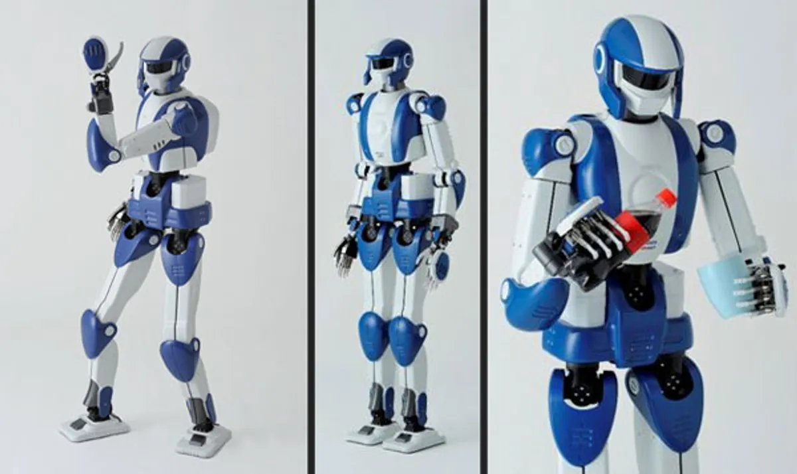
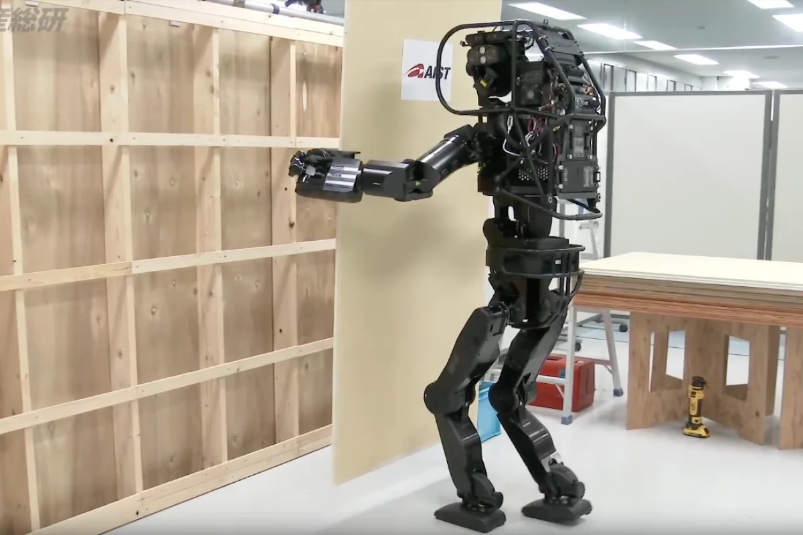
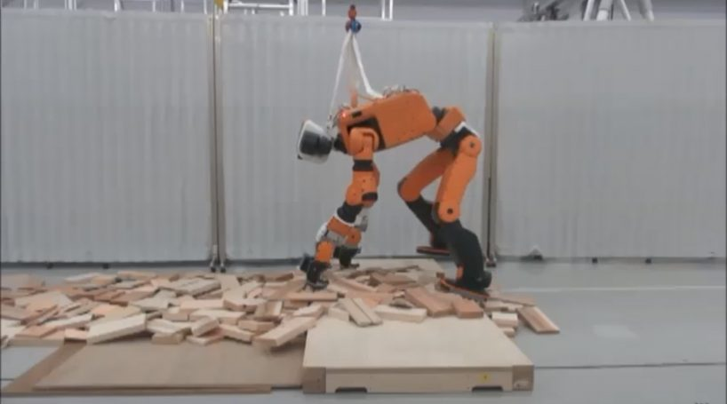
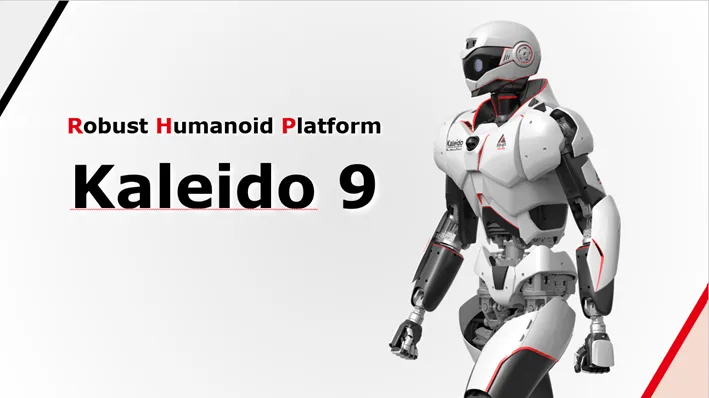
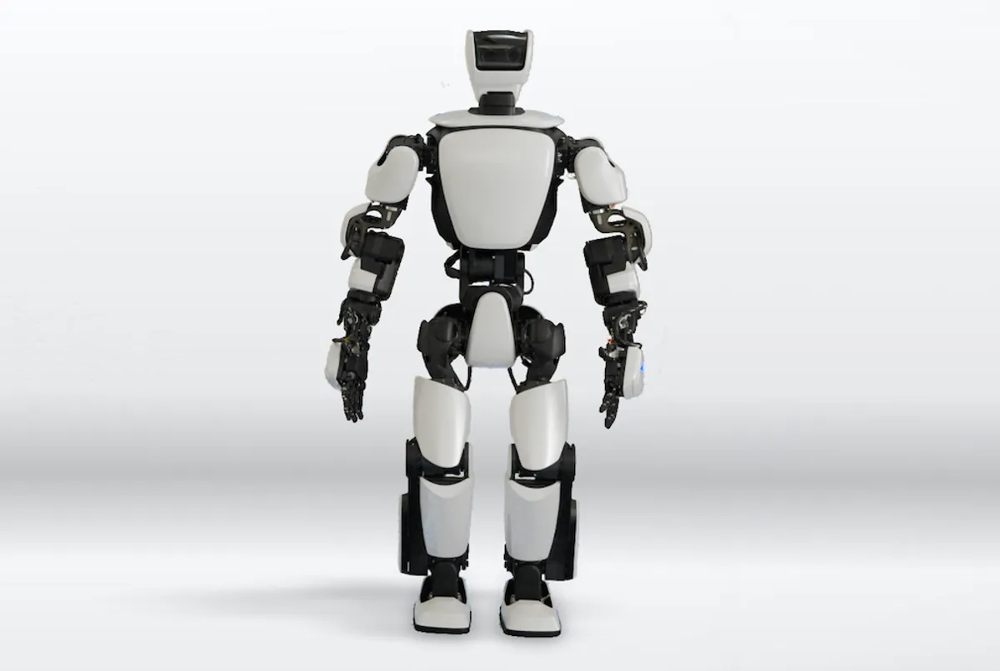
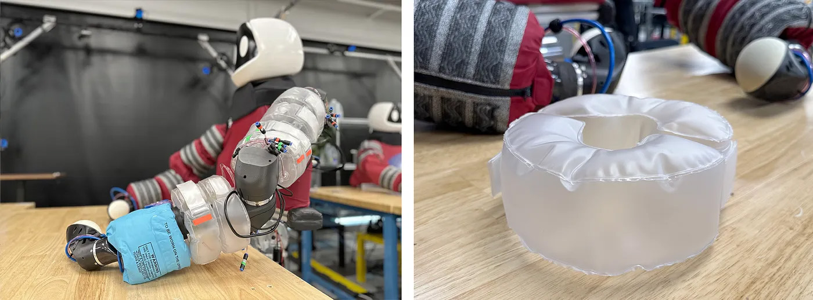
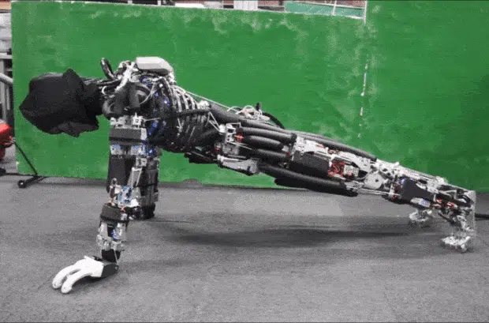
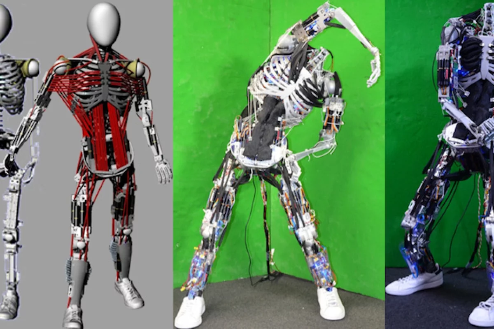
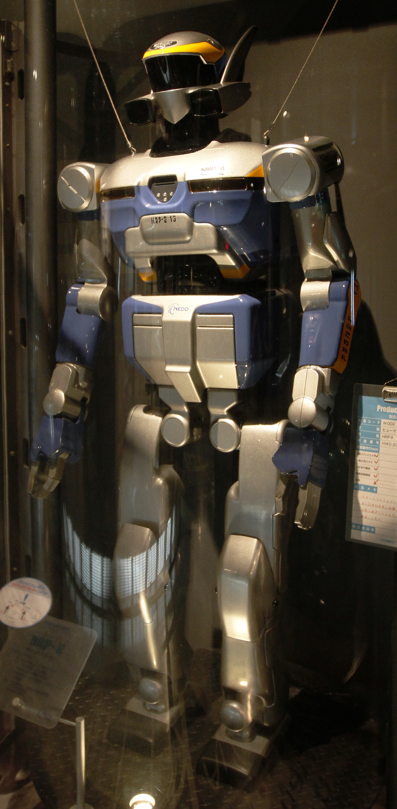
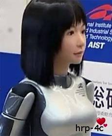

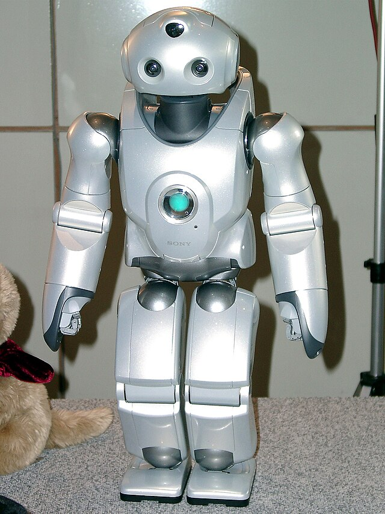